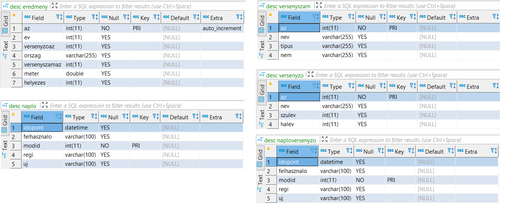

Olympic Games SQL Project
Relational SQL project analyzing Olympic-style sports results using MySQL queries.
Overview
The Olympic Games project focuses on analyzing Olympic-style sports results using SQL. The dataset contains competition results measured in meters and other performance metrics, information about athletes, events, and the goal is to extract meaningful insights from this relational structure.
The project demonstrates how SQL can be used to summarize performance data, compare athletes, and rank results across multiple events.
Project Goal
The goal of the project was to work with a sports competition dataset and answer analytical questions using SQL queries. These tasks simulate real-world analytical scenarios where structured data must be aggregated, filtered, and compared.
Performance Analysis
Identify top results and compare athlete performances across different competitions.
Ranking Logic
Use sorting and aggregation functions to determine best performers.
Statistical Queries
Apply SQL aggregation functions to summarize performance data.
Database Structure
The project follows a structured workflow typical for analytical SQL tasks: creating a dataset structure, inserting records, and solving queries that extract insights from the stored data.

Database Schema: Following tables are used in the project.
SQL Skills Demonstrated
Filtering
- WHERE
- Logical conditions
- Range queries
Sorting
- ORDER BY
- Ascending / descending results
- Top results selection
Aggregation
- COUNT
- AVG
- MAX / MIN
- GROUP BY
Analytical Logic
- Result comparison
- Grouped statistics
- Summary reports
Example Query Scenarios
The Olympic database project includes analytical SQL tasks, subqueries, parameterized procedures, and reusable database functions. The examples below were selected to highlight stronger portfolio-level SQL patterns beyond simple filtering.
1. Since when have women competed in each Olympic event?
This query examines which is the earliest Olympic year for each individual women's event in the database. It effectively demonstrates the use of JOIN, GROUP BY, and ORDER BY.
SELECT versenyszam.nev, eredmeny.ev, nem
FROM eredmeny
JOIN versenyszam ON versenyszam.az = versenyszamaz
WHERE nem = "női"
GROUP BY versenyszam.nev
ORDER BY ev;
2. Who are the athletes who have no registered results?
This example is a LEFT JOIN-based verification query that shows which athletes do not have any associated results. It is a useful data quality and consistency checking task.
SELECT nev
FROM versenyzo, helyezes
LEFT JOIN eredmeny ON versenyzo.az = eredmeny.versenyzoaz
WHERE eredmeny.helyezes IS NULL;
3. Who are those athletes who participated in the same events as Krisztian PARS?
This query uses a subquery and effectively demonstrates how to identify other athletes who participated in the same events as a specific competitor.
SELECT versenyzo.nev, versenyszam.nev
FROM versenyzo
JOIN eredmeny ON versenyzo.az = eredmeny.versenyzoaz
JOIN versenyszam ON versenyszam.az = versenyszamaz
WHERE versenyszam.nev = (
SELECT versenyszam.nev
FROM versenyzo
JOIN eredmeny ON versenyzo.az = eredmeny.versenyzoaz
JOIN versenyszam ON versenyszam.az = versenyszamaz
WHERE versenyzo.nev = "Krisztian PARS"
);
4. Stored Procedure
The project contains not only simple SELECT queries but also stored procedures. This procedure displays all related data for the high jump event.
DELIMITER $$
DROP PROCEDURE IF EXISTS magasugras $$
CREATE PROCEDURE magasugras()
BEGIN
SELECT *
FROM versenyzo
JOIN eredmeny ON versenyzo.az = eredmeny.versenyzoaz
JOIN versenyszam ON versenyszam.az = versenyszamaz
WHERE versenyszam.nev = "magasugrás";
END $$
DELIMITER ;
CALL magasugras();
5. Stored Function
This example demonstrates a parameterized stored function that returns the number of gold medals for a specified athlete. It effectively illustrates how to encapsulate business logic at the database level for reusability.
DELIMITER $$
DROP FUNCTION IF EXISTS versenyzo_db $$
CREATE FUNCTION versenyzo_db(elsoHelyezett VARCHAR(255))
RETURNS INT
BEGIN
DECLARE vissza INT;
SET vissza = (
SELECT COUNT(eredmeny.helyezes)
FROM versenyzo
JOIN eredmeny ON versenyzo.az = eredmeny.versenyzoaz
JOIN versenyszam ON versenyszam.az = versenyszamaz
WHERE eredmeny.helyezes = 1
AND versenyzo.nev = elsoHelyezett
);
RETURN vissza;
END $$
DELIMITER ;
SELECT versenyzo_db('Ellery CLARK');
Key Takeaways
- The project demonstrates analytical SQL usage.
- Aggregation functions are central to the analysis.
- Ranking queries help identify top performances.
- The dataset shows how SQL can support sports analytics.